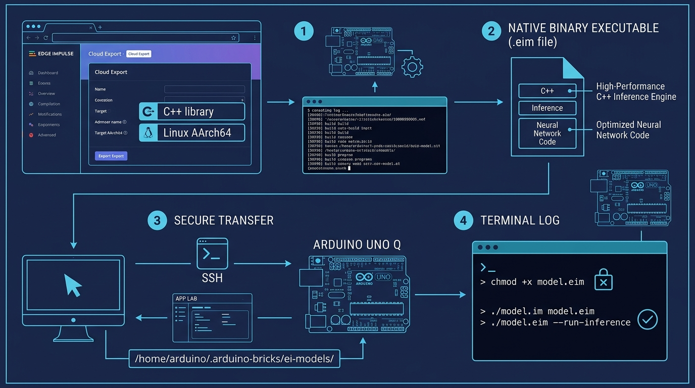
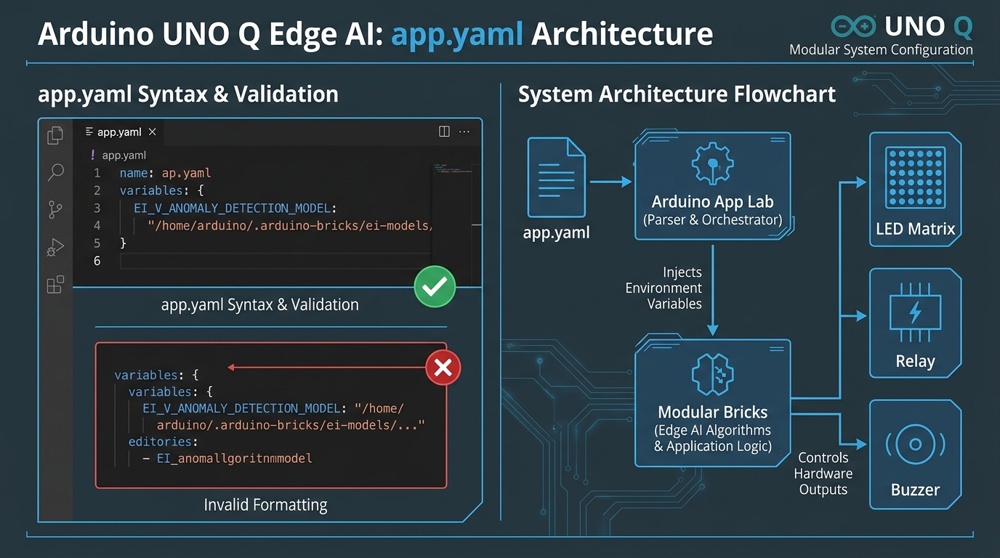

สาระสำคัญและผลการเรียนรู้ประจำบท
กรอบมาตรฐานการเรียนรู้ตามหลักสูตรแกนกลางการศึกษาขั้นพื้นฐาน และสมรรถนะสำคัญของผู้เรียน
การนำแบบจำลองปัญญาประดิษฐ์ที่ผ่านการฝึกสอนแล้วไปประมวลผลบนบอร์ดสมองกลฝังตัวที่มีทรัพยากรจำกัด จำเป็นต้องคอมไพล์เป็นไฟล์ปฏิบัติการไบนารีระดับระบบ (Native Executable Binary) ในรูปแบบ .eim (Edge Impulse Model) สำหรับสถาปัตยกรรมหน่วยประมวลผล Qualcomm Dragonwing QRB2210 (Linux AArch64) ซึ่งให้ความเร็วในการประมวลผลสูงสุดและใช้หน่วยความจำน้อยกว่าการรันผ่านตัวแปลภาษาทั่วไป พร้อมทั้งกำหนดค่าพารามิเตอร์สภาพแวดล้อมในไฟล์ app.yaml ตามมาตรฐานไวยากรณ์พจนานุกรม variables: { ... } เพื่อให้โมดูล Brick สามารถเรียกใช้งานโมเดลได้อย่างถูกต้องและมีเสถียรภาพ
ผลการเรียนรู้ที่คาดหวังตามกรอบสมรรถนะ (Learning Outcomes)
ผู้เรียนสามารถอธิบายโครงสร้างไฟล์ไบนารี .eim สถาปัตยกรรมระบบปฏิบัติการ Debian Linux AArch64 (ARMv8 64-bit) และโครงสร้างไวยากรณ์ของไฟล์กำหนดค่า app.yaml ในระบบ Arduino App Lab ได้อย่างถูกต้องตามหลักวิชาการ
ผู้เรียนสามารถคอมไพล์และดาวน์โหลดไฟล์ .eim ถ่ายโอนไฟล์เข้าสู่ไดเรกทอรี /home/arduino/.arduino-bricks/ei-models/ และบริหารจัดการสิทธิ์คำสั่งรันระบบ (chmod +x) ผ่าน Terminal ได้อย่างถูกต้อง
ผู้เรียนสามารถแก้ไขและตรวจสอบความถูกต้องของโครงสร้างตัวแปรในไฟล์ app.yaml ภายใต้บล็อก variables: { ... } ตลอดจนวินิจฉัยและแก้ไขข้อผิดพลาดของระบบปฏิบัติการลินุกซ์ได้อย่างมีตรรกะ
ผู้เรียนมีความละเอียดรอบคอบในการตรวจสอบไวยากรณ์ไฟล์คอนฟิกูเรชัน ตระหนักถึงความปลอดภัยของระบบไฟล์บนระบบสมองกลฝังตัว และมีวินัยในการสำรองไฟล์โมเดลตามมาตรฐานวิศวกรรม
สถาปัตยกรรมโมเดล .eim และขั้นตอนการติดตั้งสู่ระบบสมองกลฝังตัว
ในการนำแบบจำลองปัญญาประดิษฐ์ไปใช้งานจริงบนอุปกรณ์ปลายทาง การประมวลผลผ่านตัวแปลคำสั่งภาษาไพทอน (Python Interpreter) ทั่วไปมักมีข้อจำกัดเรื่อง ระยะเวลาหน่วงในการประมวลผล (Latency) และการใช้พื้นที่หน่วยความจำแรม (RAM) ที่สูง เพื่อแก้ปัญหานี้ แพลตฟอร์ม Edge Impulse จึงมีระบบ Cloud Compiler ที่แปลงโมเดลโครงข่ายประสาทเทียมให้กลายเป็นไลบรารีภาษา C++ ประสิทธิภาพสูง แล้วคอมไพล์ผ่าน GCC Toolchain ตรงสู่สถาปัตยกรรมซีพียู Linux AArch64 (ARMv8 64-bit) ของบอร์ด Arduino UNO Q ได้ไฟล์ผลลัพธ์เป็นไฟล์ไบนารีระดับระบบที่มีนามสกุล .eim (Edge Impulse Model)
ไฟล์โมเดล .eim คือโปรแกรมไบนารีที่สามารถรันได้โดยตรงในระดับระบบปฏิบัติการ (Native ELF Executable) ซึ่งบรรจุทั้งตัวถ่วงน้ำหนัก (Weights), อัลกอริทึมการคำนวณเทนเซอร์ (Tensor Engine) และขั้นตอนการปรับสภาพข้อมูลภาพเข้าไว้ด้วยกัน ทำให้การประมวลผลมีความเร็วสูงกว่าโมเดลแบบสคริปต์ถึง 4 - 10 เท่า

รูปที่ 6.1: แผนภาพแสดงขั้นตอนการคอมไพล์ไฟล์ .eim บนคลาวด์ การถ่ายโอนไฟล์ผ่าน SSH สู่ไดเรกทอรีมาตรฐาน และการกำหนดสิทธิ์คำสั่ง chmod +x
เลือกคอมไพล์แบบ Linux AArch64 บน Edge Impulse Studio เพื่อสร้างไฟล์ไบนารีระดับระบบ
ส่งไฟล์ .eim เข้าสู่บอร์ด Arduino UNO Q ผ่านโปรโตคอล SSH/SCP หรือผ่านระบบจัดการของ Arduino App Lab
เปิดสิทธิ์ Executable Permission บนระบบปฏิบัติการลินุกซ์ เพื่ออนุญาตให้ระบบเรียกประมวลผลคำสั่งได้
ระบุพาธของไฟล์โมเดลในไฟล์ app.yaml ด้วยไวยากรณ์ variables: { ... }
เนื้อหาบทเรียน 4 ตอน (Course Content Units)
สถาปัตยกรรมโมเดล .eim และการประมวลผลบน Linux AArch64
โมเดลปัญญาประดิษฐ์รูปแบบ .eim ถูกออกแบบขึ้นเพื่อแก้ปัญหาคอขวดของการประมวลผลบนระบบสมองกลฝังตัว โดยผสานสถาปัตยกรรม EON Compiler ของ Edge Impulse ที่ทำการตัดทอนส่วนโค้ดที่ไม่จำเป็น (Dead-code elimination) และจัดเรียงหน่วยความจำแบบคงที่ (Static Memory Allocation) ทำให้เกิดคุณประโยชน์สำคัญดังนี้:
- ไม่ต้องติดตั้งไลบรารีขนาดใหญ่: ไม่จำเป็นต้องติดตั้ง TensorFlow, PyTorch หรือ OpenCV ขนาดใหญ่ลงในระบบปฏิบัติการของบอร์ด
- การใช้คำสั่งระดับสถาปัตยกรรม (NEON SIMD Vectorization): คอมไพเลอร์สร้างชุดคำสั่งพิเศษที่ดึงประสิทธิภาพของชุดประมวลผลเวกเตอร์ ARM NEON บนซีพียู Arm Cortex ได้โดยตรง
- การสื่อสารผ่านโหมดมาตรฐาน (Standard I/O IPC): โปรแกรมไบนารี .eim สามารถรับส่งข้อมูลภาพและผลลัพธ์ผ่านทาง Standard Input/Output หรือ Socket IPC ได้อย่างยืดหยุ่น
การคอมไพล์และดาวน์โหลดไฟล์ .eim จาก Edge Impulse Studio
กระบวนการส่งออกโมเดลจากหน้าต่าง Deployment บน Edge Impulse Studio มีขั้นตอนการปฏิบัติดังนี้:
- เข้าสู่โปรเจกต์บน Edge Impulse Studio แล้วเลือกแถบเมนูด้านซ้าย Deployment
- ในส่วนค้นหาเป้าหมายการติดตั้ง (Deploy your impulse) ให้ค้นหาคำว่า
Linux AArch64 - เลือกตัวเลือก Linux (ARMv8 / AArch64) ซึ่งตรงกับสถาปัตยกรรมหน่วยประมวลผลของบอร์ด Arduino UNO Q
- กดปุ่ม Build และรอให้ระบบคลาวด์คอมไพล์ไฟล์โปรแกรมไบนารีจนเสร็จสิ้น (ระบบจะทำการดาวน์โหลดไฟล์ไบนารีลงสู่เครื่องคอมพิวเตอร์โดยอัตโนมัติ)
ไฟล์ที่ดาวน์โหลดมาจากระบบคลาวด์จะมีชื่อยาวตามรหัสโปรเจกต์ เช่น bearing-anomaly-linux-aarch64-v1.eim เพื่อความสะดวกในการอ้างอิง ควรสลับชื่อไฟล์ให้กระชับและตรงตามบทบาท เช่น AnomalyDetection.eim หรือ fomo_object_detection.eim
การถ่ายโอนไฟล์สู่บอร์ดและการจัดการสิทธิ์คำสั่ง (chmod +x)
ไดเรกทอรีมาตรฐานที่ระบบมอดูลซอฟต์แวร์ (Modular Bricks) บนบอร์ด Arduino UNO Q ใช้สำหรับค้นหาไฟล์แบบจำลองปัญญาประดิษฐ์ คือ:
หลังจากถ่ายโอนไฟล์โมเดลผ่านคำสั่ง scp หรือผ่านหน้าจอตัวจัดการไฟล์ของระบบแล้ว ระบบปฏิบัติการลินุกซ์จะยังไม่เปิดสิทธิ์การประมวลผลคำสั่ง (Execution Permission) ให้กับไฟล์ดังกล่าว หากพยายามรันระบบในทันทีจะพบข้อผิดพลาด Permission denied
คำสั่ง chmod +x จะเพิ่มแฟล็กสิทธิ์ Execute ให้แก่ไฟล์ไบนารี ทำให้ระบบปฏิบัติการสามารถเปิดและประมวลผลคำสั่งได้อย่างราบรื่น
การกำหนดค่าตัวแปรในไฟล์ app.yaml และการแก้ไขข้อผิดพลาดไวยากรณ์
ไฟล์ app.yaml ทำหน้าที่เป็นศูนย์กลางการจัดสรรตัวแปรสภาพแวดล้อม (Environment Variables Injection) ของแอปพลิเคชัน เพื่อส่งต่อพาธไฟล์โมเดลไปยังมอดูลประมวลผลต่างๆ ในระบบ โดยระบบ Arduino App Lab เวอร์ชันปัจจุบันกำหนดให้โครงสร้างตัวแปรต้องอยู่ในรูปแบบ พจนานุกรมวงเล็บปีกกา { ... }

รูปที่ 6.2: การเปรียบเทียบไวยากรณ์ไฟล์ app.yaml ที่ถูกต้องตามมาตรฐาน Arduino App Lab และผังการส่งผ่านตัวแปรสู่ Modular Bricks
variables: {
EI_V_ANOMALY_DETECTION_MODEL:
"/home/arduino/.arduino-bricks/ei-models/AnomalyDetection.eim",
EI_OBJ_DETECTION_MODEL:
"/home/arduino/.arduino-bricks/ei-models/fomo_object_detection.eim"
}
ใช้วงเล็บปีกกาครอบ มีเครื่องหมายจุลภาคคั่นระหว่างคู่คีย์และค่า สามารถถูกแปลง (Parse) เข้าสู่ระบบ App Lab ได้อย่างแม่นยำ
variables: - EI_V_ANOMALY_DETECTION_MODEL: "..." - EI_OBJ_DETECTION_MODEL: "..." # หรือเขียน dictionary ซ้อนโดยไม่มีปีกกา
การใส่เครื่องหมายขีด (-) จะทำให้กลายเป็น Array ซึ่งระบบจะไม่สามารถจับคู่ชื่อตัวแปรได้ ส่งผลให้โปรแกรมมองไม่เห็นโมเดล
ตัวอย่างโค้ดและยูทิลิตีตรวจสอบระบบ (Code Implementation & Validation)
ไฟล์โค้ดสำหรับบทเรียนนี้ได้รับการจัดเก็บไว้ในโฟลเดอร์ code_examples/chapter06 ประกอบด้วยไฟล์คอนฟิกูเรชัน app.yaml และสคริปต์ตรวจแก้ไวยากรณ์ fix_app_yaml.py
name: EdgeAI Deployment Template
description: "เทมเพลตการกำหนดค่าตัวแปรสภาพแวดล้อมสำหรับแบบจำลอง Edge Impulse บนบอร์ด Arduino UNO Q"
ports: []
variables: {
EI_V_ANOMALY_DETECTION_MODEL: "/home/arduino/.arduino-bricks/ei-models/AnomalyDetection.eim",
EI_OBJ_DETECTION_MODEL: "/home/arduino/.arduino-bricks/ei-models/fomo_object_detection.eim",
EI_CLASSIFICATION_MODEL: "/home/arduino/.arduino-bricks/ei-models/image_classification.eim",
EI_KEYWORD_SPOTTING_MODEL: "/home/arduino/.arduino-bricks/ei-models/KWS_model.eim",
EI_AUDIO_CLASSIFICATION_MODEL: "/home/arduino/.arduino-bricks/ei-models/AC_model.eim"
}
bricks: []
def analyze_app_yaml_syntax(file_path: str) -> dict:
"""ตรวจสอบความถูกต้องของโครงสร้างไวยากรณ์ไฟล์ app.yaml"""
if not os.path.exists(file_path):
return {"valid": False, "reason": f"ไม่พบไฟล์คอนฟิกูเรชัน: {file_path}", "variables": {}}
with open(file_path, "r", encoding="utf-8") as f:
content = f.read()
# ตรวจสอบรูปแบบ variables: { ... }
brace_pattern = re.compile(r'variables:\s*\{([^}]*)\}', re.DOTALL)
match = brace_pattern.search(content)
if not match:
reason = "โครงสร้าง variables ไม่ได้ใช้วงเล็บปีกกา { ... } ตามมาตรฐาน Arduino App Lab"
return {"valid": False, "reason": reason, "variables": {}}
# สกัดค่าตัวแปรภายในวงเล็บปีกกา
raw_vars = match.group(1).strip()
extracted_vars = {}
for line in raw_vars.split("\n"):
line = line.strip().rstrip(",")
if ":" in line:
k, v = line.split(":", 1)
extracted_vars[k.strip()] = v.strip().strip('"').strip("'")
return {
"valid": True,
"reason": "โครงสร้างไวยากรณ์ถูกต้องสมบูรณ์ตามมาตรฐาน Arduino App Lab",
"variables": extracted_vars
}
$ python code_examples/chapter06/fix_app_yaml.py
===========================================================================
บทเรียนที่ 6: ยูทิลิตีตรวจสอบและกำหนดค่าไฟล์ app.yaml บน Arduino UNO Q
===========================================================================
[*] ตำแหน่งไฟล์เป้าหมาย: code_examples/chapter06/app.yaml
[*] ผลการวิเคราะห์ไวยากรณ์: ถูกต้องสมบูรณ์ (PASS)
└─ รายละเอียด: โครงสร้างไวยากรณ์ถูกต้องสมบูรณ์ตามมาตรฐาน Arduino App Lab
[*] สรุปตัวแปรโมเดลปัญญาประดิษฐ์ในระบบ (Configured Model Paths):
├─ EI_V_ANOMALY_DETECTION_MODEL -> /home/arduino/.arduino-bricks/ei-models/AnomalyDetection.eim
├─ EI_OBJ_DETECTION_MODEL -> /home/arduino/.arduino-bricks/ei-models/fomo_object_detection.eim
├─ EI_CLASSIFICATION_MODEL -> /home/arduino/.arduino-bricks/ei-models/image_classification.eim
├─ EI_KEYWORD_SPOTTING_MODEL -> /home/arduino/.arduino-bricks/ei-models/KWS_model.eim
├─ EI_AUDIO_CLASSIFICATION_MODEL -> /home/arduino/.arduino-bricks/ei-models/AC_model.eim
[*] การตรวจสอบไฟล์โมเดลไบนารี: /home/arduino/.arduino-bricks/ei-models/AnomalyDetection.eim
└─ [สถานะ] ไวยากรณ์ของไฟล์ app.yaml ถูกต้อง พร้อมใช้งานร่วมกับ Modular Brick
ใบงานและภารกิจปฏิบัติการประจำบทเรียน (Practical Tasks)
ให้นักเรียนปฏิบัติตามภารกิจทั้ง 5 ขั้นตอน โดยคลิกทำเครื่องหมายลงในช่องสี่เหลี่ยมเมื่อปฏิบัติภารกิจเสร็จสมบูรณ์ ระบบจะคำนวณและบันทึกความก้าวหน้าลงในหน่วยความจำของอุปกรณ์โดยอัตโนมัติ
คำถามประเมินความเข้าใจและคิดวิเคราะห์ (Review Questions)
คลิกเพื่อดูแนวคำตอบ
คลิกเพื่อดูแนวคำตอบ
chmod +x /home/arduino/.arduino-bricks/ei-models/AnomalyDetection.eim เพื่อเปิดสิทธิ์ Executable (-rwxr-xr-x) ให้แก่ไฟล์
คลิกเพื่อดูแนวคำตอบ
EI_V_ANOMALY_DETECTION_MODEL เข้าสู่ระบบสภาพแวดล้อมโดยตรง การใช้วงเล็บปีกกา variables: { KEY: "VALUE" } เป็นข้อกำหนดไวยากรณ์มาตรฐานของระบบ หากเขียนเป็น Array (เครื่องหมายขีด -) ระบบตัวแปลภาษาจะมองข้อมูลเป็นรายการลำดับ (List) แทนที่จะเป็นคู่คีย์-ค่า ทำให้ระบบซอฟต์แวร์ไม่สามารถค้นหาพาธของแบบจำลองปัญญาประดิษฐ์ได้ และโปรแกรมจะล้มเหลวขณะเริ่มต้นทำงาน
แบบทดสอบท้ายบทเรียนที่ 6 (ปรนัย 10 ข้อ)
ทดสอบความรู้ความเข้าใจตามเกณฑ์มาตรฐานตัวชี้วัดสาระเทคโนโลยี พร้อมเฉลยและบันทึกคะแนนอัตโนมัติ
บทเรียนที่ 7: การประมวลผลโมเดลตรวจจับความผิดปกติจากภาพ และการบันทึกข้อมูลลง Database-SQL Brick
เชื่อมโยงผลการวินิจฉัยของโมเดล VAD เข้ากับระบบฐานข้อมูล SQL บนบอร์ดเพื่อบันทึกประวัติการผลิต